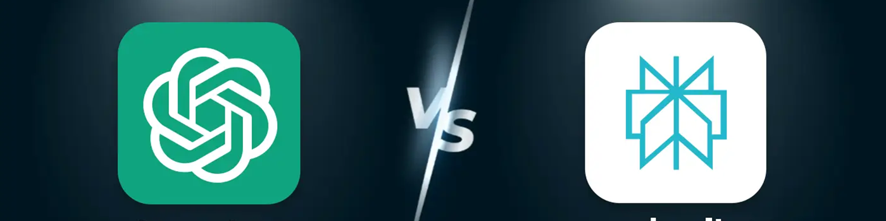

ChatGPT 與 Perplexity AI：2025 年哪個更好？
自從ChatGPT橫空出世以來，各大科技公司紛紛加入，推出了一系列飛速發展的AI模型。到2025年，主流AI在日常使用和核心能力上將會非常相似，以至於我們大多數人幾乎無法區分它們。
這就是 Perplexity AI 脫穎而出的原因：它將人工智能問答與實時搜索和來源引用功能融爲一體。它不僅僅是一個聊天機器人，更是傳統搜索引擎的替代品。
那麼，Perplexity AI 與廣受歡迎的 ChatGPT 相比如何呢？經過數月的實際使用和面對面測試，我們的團隊從多個維度對這兩款工具進行了評估，並整理出了這份比較指南，旨在幫助你了解它們之間的差異，找到最適合你的一款。
Perplexity AI 與 ChatGPT：基本信息比較
ChatGPT 和 Perplexity AI 都是功能強大的 AI 工具，但它們各有側重。以下是一個簡單的對比表，可幫助你快速了解它們的核心定位和主要用例：
| 方面 | ChatGPT | Perplexity AI |
|---|---|---|
| 公司 | OpenAI | Perplexity |
| 發布日期 | 2022年11月 | 2022年末 |
| 核心定位 | 通用人工智能助手 | 人工智能搜索引擎 |
| 主要用途 | 全方位任務 | 查找信息、進行研究 |
| Web 訪問 | 需要手動開啓 | 默認開啓 |
| 響應方式 | 更像人類 | 更像是搜索摘要 |
| 最適合 | 需要一體化 AI 助手的用戶 | 最關心準確、引用信息和快速查找的用戶 |
Perplexity AI 與 ChatGPT：模型比較
Perplexity AI 和 ChatGPT 都是基於大型語言模型 (LLM) 構建的，但也存在一些關鍵區別：
ChatGPT 由 OpenAI 開發，在多模態交互 (LMM) 和創意工作方面表現更出色。它基於 GPT‑4o / GPT‑4.5，支持文本、圖像和音頻的輸入和輸出。此外，它還提供混合媒體創作、語音聊天和圖像編輯等更豐富的功能，使其成爲一款適合廣泛用戶的全面工具。Perplexity 由 Perplexity Inc. 開發，採用其自主研發的檢索增強系統 (RAG)，在準確性和引用透明性方面具有優勢。每個答案都包含可點擊的來源，非常適合學生、研究人員、市場分析師或任何需要高度可信且可追溯信息的人士。
💬
LLM(大型語言模型) 是當今最常見的人工智能類型。它能夠閱讀、書寫和理解語言，以文本作爲其主要的輸入和輸出形式。LMM(大型多模態模型) 是 LLM 的自然演化。除了文本之外，它還可以處理圖像、視頻、音頻、代碼和其他格式。這是邁向更通用的人工智能 (AGI) 的重要一步。
以下是目前大多數用戶所依賴的這兩個 AI 的核心模型的概述：
| 工具 | 模型(誰可以使用它) | 描述 |
|---|---|---|
| GPT‑4o(免費版/增強版/專業版) | LMM;支持文本、圖像和音頻 | |
| GPT‑4o mini(免費/增強版/專業版) | 快速推理和高效解決問題 | |
| GPT‑4.5(僅限 Plus / Pro) | 擅長寫作和創意 | |
| o1 / o3 / o4‑mini 系列(僅限 Pro) | 提供高級推理和編碼技能 | |
| Sonar(免費/專業版) | 默認模型;快速響應並自動引用來源 | |
| GPT‑4 Omni / Claude / Gemini / Grok(僅限專業版) | 大語言模型 (LLM) 選項 |
大多數 ChatGPT 用戶所依賴的 GPT‑4o 模型是一個經典的 LLM(同時也是一個 LMM)，因此它可以處理多模態輸入(圖像、音頻、文本)。而 Perplexity AI 主要基於 LLM 構建，其多模態交互能力較弱，更傾向於文本理解 + 實時檢索 + 來源引用。
那麼，這些人工智能模型目前的評級如何？在ArtificialAnalysis.ai網站上，他們的"人工智能指數"對比圖衡量了領域知識、推理、數學和編程等領域的表現。

從結果來看，OpenAI 的 GPT-4o Pro(預估)和官方 GPT-4o (O3) 分別以 71 分和 70 分位居榜首，表明它們在整體性能上仍然領先。Claude 3.5 Sonar 系列的得分在 43 到 49 分之間，略低於 GPT-4.5 的 53 分。
GPT-4o 的排名相對較低，但對於一個同時處理文本和圖像的多模態模型來說，它的語言理解能力仍然相當出色。畢竟，它必須在推理能力和多模態性之間取得平衡——魚與熊掌不可兼得。
由於它們基於不同的型號，定位也不同，使用起來感覺也有所不同。下面，我將逐一分析它們的優缺點。
我如何測試它們？
爲了確保測試結果客觀一致，我在兩臺相同的 Mektec 便攜式電腦上對 ChatGPT 4o 和 Perplexity Pro 進行了評測，每臺電腦均配備 AMD Ryzen 7 7840HS 處理器、Radeon 780M 集成顯卡、16GB RAM 和 1TB SSD。兩臺設備均在相同的網絡條件下進行測試。
我們的評估重點關注兩種人工智能工具的理解能力和輸出質量。對於開發相關的任務，我們測試了它們生成功能代碼的能力。對於創造性任務，我們評估了它們寫作的流暢性和連貫性——例如，要求它們分享對"失去與希望"的看法。對於基於搜索的任務，我們考察了它們是否能夠提供最新信息以及可靠的來源，例如檢索有關"50501運動"的詳細信息，並比較每個人工智能處理引用的方式。
我還測試了它們的數據處理能力，例如生成帶有回歸線的散點圖、圖像生成和分析，以及多輪對話中的上下文理解和響應一致性——所有這些都旨在盡可能地模擬現實世界的使用情況。
ChatGPT 的全面性能
作爲當今人工智能領域的領軍人物之一，ChatGPT 的最大優勢在於其全面均衡的性能。無論是基礎語言理解、情感交互、編程、視覺推理，還是圖像和音頻生成，ChatGPT 都取得了業界領先的成績。
雖然在某些特定任務中，ChatGPT 的精度可能無法達到某些領域特定模型的極限，但它的各種功能能夠無縫協作，沒有明顯的弱點。簡而言之，ChatGPT 是人工智能領域真正的全能型人才。
數據分析與整合技能
在我提交之前收集的學生學習時間和學業成績數據後，ChatGPT 在幾秒鍾內對其進行了分析，生成了散點圖並擬合了回歸線——所有這些都具有令人印象深刻的速度和準確性。

圖表清晰地顯示了學習時間與學業成績之間的高度正相關關系。GPT 生成的輸出簡潔明了，結構清晰，準確反映了原始數據分布。擬合的回歸線有效地模擬了總體趨勢，既具有可解釋性，又具有預測價值。
編碼能力
根據 JetBrains 2024 年開發者生態系統報告，現在幾乎一半的開發者定期使用 ChatGPT 執行編碼任務——尤其是生成代碼片段、調試和學習實現邏輯。
雖然作爲一名科技博主，我對編程有一些基本的了解，但我並非專業開發者。ChatGPT 真正強大的地方在於，它能讓像我這樣的非專業人士輕松構建和部署應用或遊戲。例如，我使用 ChatGPT o4-mini-high 模型創建了一個簡單的炸彈人風格遊戲——無需本地設置，整個過程流暢且對初學者友好。
我所做的只是輸入一個簡單的提示："你能寫一個經典的炸彈人風格的遊戲並讓我預覽一下嗎？使用任何你能找到的圖像作爲視覺效果。"

它很快就給出了令人滿意的結果。更讓我印象深刻的是OpenAI最近推出的"思維可視化"功能，它讓我能夠實時看到它的逐步推理過程。這種感覺真的像是在與一位非常聰明的夥伴合作。
在這個任務中，ChatGPT 最初考慮使用 Python 來實現，但很快意識到我當前的環境不支持 Pygame 渲染。隨後，它探索了其他解決方案，建議使用 HTML/JavaScript Canvas 或 React 進行交互。最終，它決定採用基於 Canvas API 的 HTML 和 JavaScript 解決方案——這對於基於 Web 的執行來說是一個明智且適應性強的選擇。

更重要的是，盡管我沒有給出具體的視覺效果指示，ChatGPT 也展現出了令人印象深刻的適應性。一旦它意識到無法提取外部圖像，它就會迅速轉向使用簡單的彩色塊來表示遊戲元素——這是一種優雅而實用的解決方法。

後來，我覺得視覺效果可以稍微改進一下，所以我要求它更改某些元素的顏色。我的指令很模糊——幾乎說不清楚——但 ChatGPT 仍然準確理解了我的意思，並相應地調整了視覺效果。

Perplexity AI 在這方面的靈活性差得多。我發送了完全相同的提示，但它忽略了我要求預覽結果的請求，也沒有意識到我的本地環境不支持 Pygame。相反，它只是返回了一段 Python 代碼，而沒有考慮這段代碼是否真的能在我的終端上運行。

其他功能
除了上述功能外，ChatGPT 還能處理各種各樣的附加任務。正如你可能從前面的例子中了解到的那樣，它在語言理解方面的能力尤其令人印象深刻——除非它能夠深入理解意圖和上下文，否則它不可能根據我模糊的指令準確地傳達我想要的內容。
- 回答技術、歷史、醫學和一般法律知識等各個領域的問題
- 撰寫文章、博客文章、故事、詩歌或劇本
- 多種語言之間翻譯
- 總結、重寫或潤色文本以提高清晰度和表達能力
- 提供旅行提示、美食推薦和日常生活小竅門
- 參與對話、陪伴並提供情感支持
- 協助進行創意頭腦風暴——例如命名、品牌建設或遊戲設計
- 爲AI圖像工具生成提示並與視覺生成平臺協作
- 分析對話並有效提取關鍵點
我不會在本文中詳細介紹逐步的屏幕截圖，但根據我們的實際使用和測試，ChatGPT 在前面提到的所有功能中始終提供穩定且令人印象深刻的性能。
然而，在某些垂直領域，ChatGPT 的功能可能不如專業工具那麼深入。例如，它的圖像生成能力不如 Midjourney 提供的細節和專業水平。Perplexity AI 超越 ChatGPT 的地方在於其檢索和整合信息的能力。
Perplexity AI 在信息檢索方面的優勢
Perplexity AI 於 2022 年底上線，其核心優勢在於將人工智能與實時網絡搜索緊密結合，打造一種全新的對話式搜索體驗。截至 2025 年，Perplexity 在信息檢索領域取得了長足的進步。
但隨着過去三年人工智能技術的爆發式增長，幾乎所有主流模型都具備了信息檢索能力。那麼，Perplexity 曾經的優勢還有多少呢？尤其是與 ChatGPT 相比，它在如今的搜索和檢索領域是否仍然佔據着明顯的優勢？
最直接的答案是向兩個AI提出同一個問題，並比較它們的答案。所以我首先問它們："爲什麼50501運動會在美國發生？" 以下是ChatGPT的回答。

默認情況下，GPT 不啓用瀏覽功能——你需要手動開啓瀏覽器模式。但是，如果你的提示包含"請查找最新信息"或"確保其基於事實"之類的短語，即使沒有明確啓用瀏覽功能，它也有可能觸發網頁搜索，這表明它的響應方式具有一定的靈活性。
從結果來看，GPT 雖然確實進行了實時搜索，但其引用內容的深度和豐富度略有不足。即使是免費版的 Perplexity，它也能提供更全面的信息和更強大的來源支持。只需查看下面 Perplexity 的響應截圖，你就能立即注意到其中的差異。

最顯著的區別出現在"關鍵動向"部分：GPT 僅引用了維基百科的相關內容，信息量相對有限。相比之下，Perplexity 不僅提供了更詳細的背景分析，還引用了《新聞周刊》和《經濟時報》等多個知名來源的報道，提供了更廣泛的報道和更深入的洞察。
這種差距在需要多維度理解和基於事實支持的查詢中尤爲明顯。我隨後讓 Perplexity AI 查找"2023 年全球溫室氣體排放量"，它再次表現可靠——保持了其標志性的優勢：引用多個來源，提供準確的信息，並以清晰、結構化的格式呈現所有內容。

綜合來看，Perplexity AI 在實時搜索和引用透明度方面依然表現強勁，尤其適合需要最新信息或權威來源的任務。雖然 ChatGPT 在引用來源數量方面略遜一籌，但其整體響應在邏輯性和準確性方面仍然可靠。
Perplexity AI 與 ChatGPT：語言理解比較
雖然 Perplexity AI 無疑是實時搜索領域最強大的 AI 之一，但僅憑這一點還不足以評估一款 AI 工具。語言理解在整體用戶體驗中也扮演着同樣重要的角色。
Perplexity AI 確實具備對話助手的功能。它提供了與 ChatGPT 類似的聊天界面和交互風格。尤其是在其專業搜索模式下，它可以處理多輪對話、跟進問題，並分析用戶意圖以優化其響應。

然而，在語境理解和情感互動方面，Perplexity 與 ChatGPT 相比略有不足。例如，當我要求它分享對"失去與希望"的看法時，它的回應顯得過於機械化——缺乏情感深度，也缺乏那種能夠真正進行情感交流的人工智能所應具備的人類般的同理心。

相比之下，ChatGPT 對同一問題的回答——它對"失落與希望"的解讀——則顯得更加人性化。它不僅提供了一個情感豐富的答案，還觸及了一層哲學思考。
ChatGPT 能夠以一種既真摯又深思熟慮的方式探索這些復雜的情感，展現出對情感的細致理解以及對生命意義的深刻思考。最終，回復溫暖、富有洞察力，並真正引人入勝。

Perplexity AI 更傾向於提供精確、結構化的信息響應，但它缺乏 ChatGPT 對話風格的自然流暢和情感細微差別。
雖然 Perplexity 也能處理寫作、文檔和圖像分析，甚至專業推理等任務，但我們的測試表明，它在靈活性和多功能性方面不如 ChatGPT。它並非這類任務的理想選擇。
Perplexity AI 與 ChatGPT：AI 實踐體驗
我會在本文末尾分享我的個人推薦，但最終，找到適合你的 AI 的最佳方式是親自嘗試。ChatGPT 和 Perplexity AI 都提供免費版本，你可以探索它們的核心功能，並了解它們在實際應用中的運作方式。
如果你有興趣嘗試 ChatGPT 和 Perplexity 的高級版本，我有一個很棒的建議：考慮使用一個集成了多個頂級模型的一體化 AI 平臺。這樣，你就可以同時使用這兩個工具以及其他工具，而無需單獨訂閱。
我個人使用過 環球巴士 的一體化平臺，體驗非常棒。它集成了幾乎所有主流的 AI 模型，讓你可以一站式試用 ChatGPT 和 Perplexity AI 的付費版本。而且，它比通過官方網站單獨訂閱任何一款工具更實惠。

如果你還沒有準備好購買一體化的人工智能平臺，環球巴士 還提供ChatGPT Plus和 Perplexity Pro 的共享訂閱服務。價格比直接通過官方網站訂閱便宜約 30%，因此是一個經濟實惠的選擇。
ChatGPT 與 Perplexity AI：價格比較
定價也是選擇 AI 工具時的一個關鍵因素。以下是 ChatGPT 和 Perplexity AI 的訂閱計劃簡要概述：
| 計劃 | ChatGPT | Perplexity AI |
|---|---|---|
| 免費計劃 | GPT-3.5，基本功能 | 聲納模型，基本功能 |
| 標準計劃 | ChatGPT Plus：20 美元/月 | Perplexity Pro：每月 20 美元 |
| 高級計劃 | ChatGPT Pro：每月 200 美元 | Perplexity Max / Enterprise：每月 200 美元起 |
你可以選擇最適合你使用頻率和功能需求的訂閱方案。對於日常使用，免費或標準方案通常已足夠，而重度用戶或專業用戶則可能更適合選擇高級方案。
對於企業或專業用戶，ChatGPT Pro 或 Perplexity Enterprise 提供高級模型和更高的使用限制，更適合處理高強度任務。建議你根據實際需求權衡性價比，選擇最劃算的方案。
如果你希望以更實惠的價格使用高級 AI 功能，你可以考慮通過第三方平臺訂閱。
例如，在 環球巴士 上，你可以以較低的成本獲得 ChatGPT Plus 或Perplexity Pro等熱門工具的共享訂閱——節省資金的同時仍可享受完整的官方服務。
👉 立即前往環球巴士選擇你的 AI 訂閱計劃。
最終結論：我爲什麼選擇 ChatGPT
在多維度比較了Perplexity AI和ChatGPT之後，我仍然推薦ChatGPT——它無疑是目前最可靠的選擇。它在創意寫作、編程、翻譯和多模態交互方面表現出色，在所有主要用例中都保持着持續強勁的表現。簡而言之，它是一款真正全面、全能的AI助手。
雖然 Perplexity AI 在實時搜索和引用透明度方面確實具有優勢——這使得它非常適合需要事實核查或深入信息收集的用戶——但在創作靈感、編碼支持和自然對話流程方面，它不如 ChatGPT。
此外，ChatGPT 的生態系統正在不斷發展，即將發布的 GPT-5(可能就在幾天後)可能會進一步增強其網絡搜索和任務執行能力，逐漸縮小與 Perplexity 的差距。
常問問題
Perplexity AI 比 ChatGPT 更好嗎？
Perplexity AI 擅長實時網頁搜索和來源引用，是獲取最新信息的理想之選。然而，對於大多數用戶來說，在創意寫作、推理、編程以及整體語言能力方面，ChatGPT 仍然更強大、功能更豐富。
Perplexity AI 使用 GPT-4 嗎？
是的，Perplexity AI 爲 Pro 用戶提供 GPT-4 訪問權限。默認情況下，它使用自己的模型進行搜索和合成，但 Pro 訂閱用戶可以根據任務選擇 GPT-4、Claude 3 或 Mistral 等模型來生成響應。
Perplexity AI 完全免費嗎？
Perplexity AI 提供免費版本，可使用其核心功能和網頁搜索功能。不過，GPT-4、Claude 3 等高級模型和其他專業版功能需要訂閱。因此，雖然免費使用，但完整訪問權限並非完全免費。